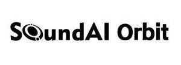

Trade Mark Journal No.2025/015 11 April 2025
UK00004176215 19 March 2025 (9,42)

- Class 9
- Security token hardware; Central processing units for processing information, data, sound or images; Computer hardware; Interactive touchscreen terminals; Downloadable mobile applications using artificial intelligence (AI) for home automation; Downloadable computer chatbot software for simulating conversations; Tablet computers; Electronic book readers; Biometric identity cards; Downloadable gesture recognition software; Digital Voice Signal Processor; Smartwatches; Smartglasses; Motion recognizing sensors; Currency Recognition Machine; Pedometers; Entry/exit security portal comprised of an electronic passageway equipped with biometric devices for identification verification and detection of impermissible items being carried through; Biometric Scanner; Transmitters of electronic signals; Radio-frequency antennas; Radio monitors for reproduction of sound and signals; Smartphones; Security surveillance robots; Headphones; Ear pads for headphones; Humanoid robots having communication and learning functions for assisting and entertaining people; Personal headphones for use with sound transmitting systems; Sound reproduction apparatus; Digital sound processors; Wireless headphones; Virtual reality glasses; Talking Scale; Humanoid robots with artificial intelligence for use in scientific research; Cable connectors; Electronic access control systems for interlocking doors; Biometric locks; 3D spectacles; Spectacle cords; Portable power chargers; Battery chargers; Rechargeable batteries; Loudspeaker systems; Sound systems comprising remote controls, amplifiers, loudspeakers and components therefor; Recorded computer software using artificial intelligence (AI) for facial and voice recognition, voice watermark generation, personalized content generation, and multi - language support; Downloadable computer software using artificial intelligence (AI) for the field of multi - skilled language models, including voice collection and voice recognition; Downloadable computer software applications in the field of intelligent voice interaction applications, including voice recording, transcription, intelligent speech recognition, speech synthesis, natural language understanding, and personalized content generation intelligent voice interaction application software.
- Class 42
- Technical research in the field of acoustics; Room design consisting of selection of artwork, lighting, and furnishings for an environment designed to help achieve mental wellness, including stress management and relaxation, using computer controlled advanced sound wave technology; Consulting in the field of acoustics, sound, noise, and vibration for scientific purposes; Advanced product research in the field of artificial intelligence (AI); Research in the field of artificial intelligence (AI) technology; Research in the field of artificial intelligence (AI); Technical consulting in the field of artificial intelligence (AI) software customization; Technology consultation in the field of artificial intelligence; Inspection of headphones for quality control purposes; Industrial design; Interior design; Electronic data storage; Computer programming; Computer software design; Computer software consultancy; Monitoring of computer system operation by remote access; Consulting services in the field of software as a service (SAAS).
SOUNDAI TECHNOLOGY CO., LTD.
Representative: Withers & Rogers LLP